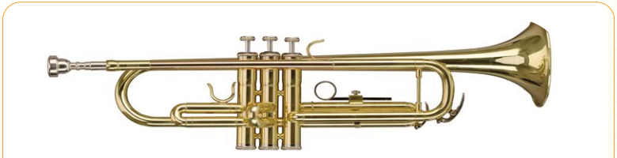

Meaning of musical instruments
Musical instruments are tools used to produce musical sounds. Each type of musical instruments has its unique sound that makes the music interesting. It also has a taste and arouses various feelings. These instruments can add goodness to music by giving out rhyming sounds to accompany the voices of singers or sounds of other musical instruments.
Types of musical instruments
Musical instruments are divided into different groups. These groups include wind instruments, struck instruments, stringed instruments and percussion instruments. These different types of instruments can be found in different societies in the world.
Wind instruments
These are types of musical instruments in which a musician blows air to produce sounds. Examples of these instruments are trumpets, baragumu, flutes, lipenenga and lilandi. These instruments can give out high and low sounds using different blowing methods. Figure 1 shows some of the wind instruments.
